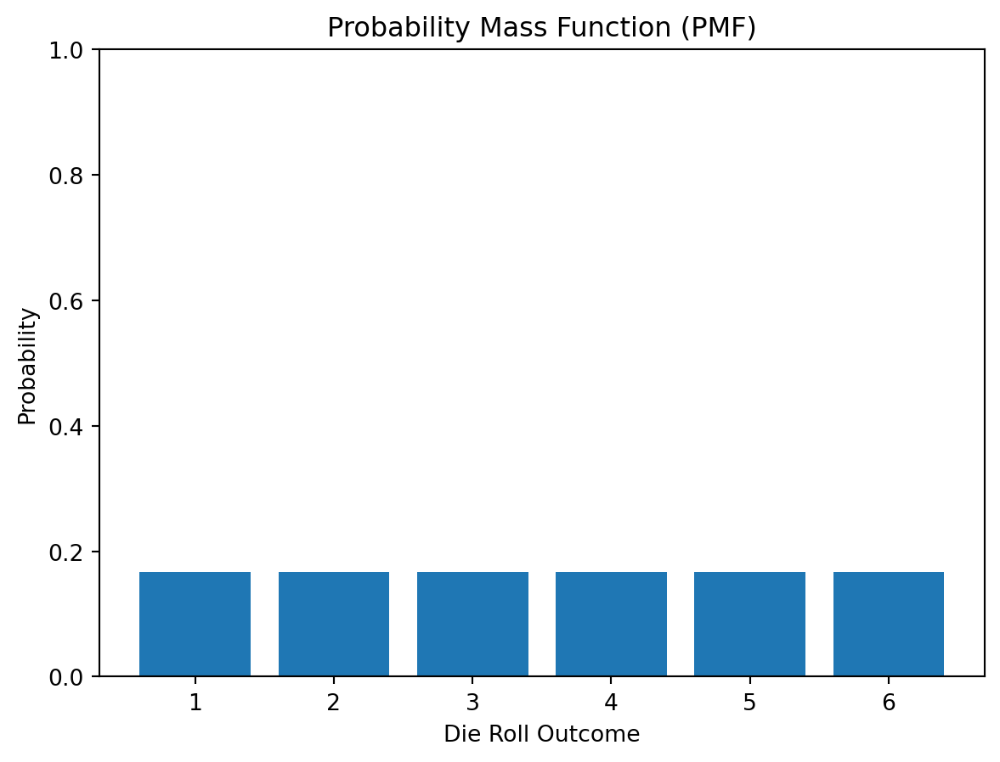
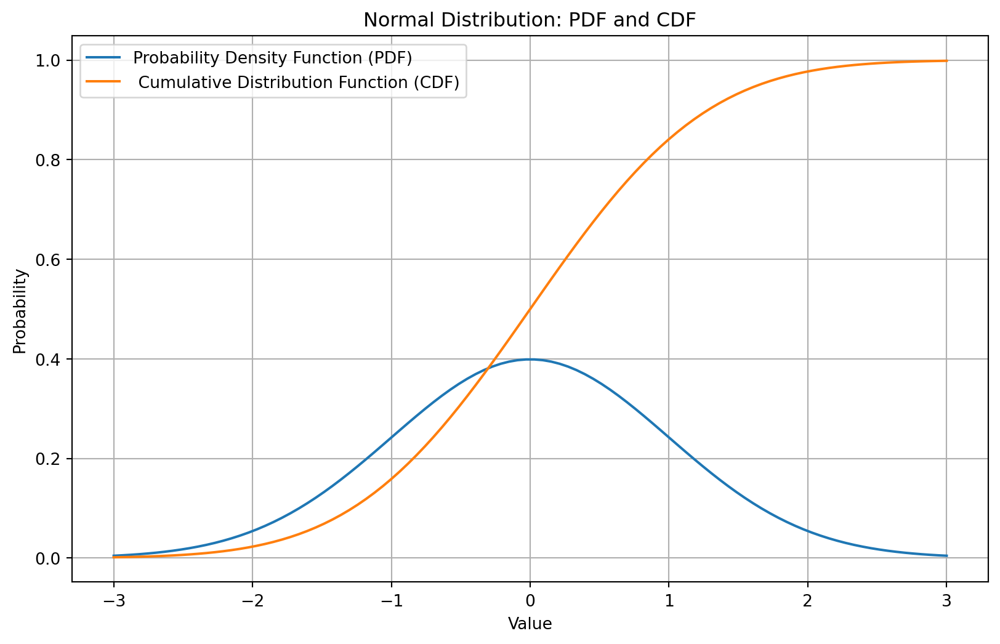

Probability theory is a fundamental branch of mathematics and it is essential in statistics and machine learning. At its core, it provides the framework for understanding and quantifying uncertainty in various processes. In machine learning, probability theory is instrumental in model building, decision making, and predictions.
In this blog, we will discuss the topics on (1) randam variables, (2) probability distributions.
Random Variables
Random variable is a formalization in mathematics of a object that depends on random events. It is a function (denoated as X) from possible outcomes in a sample space to a measurable space.
There are two types of random variables:
Discrete Random Variables: When the range of function X is finitely or infinitely countable, the random variable is called a discrete random variable. Examples: the number of heads in a coin toss, or the number of customers visiting a store.
Continuous Random Variables: When the range of function X is uncountably infinite, the random variable is called a continuous random variable.
Probability Distribution
In the following, we show a concrete example of each type of random variable, respectively.
Probability Mass Function (PMF) for Discrete Random Variable
In this example, let’s consider a discrete random variable that represents the result of a roll of a six-sided die. The possible outcomes are 1, 2, 3, 4, 5, or 6, each with an equal probability of 1/6.
The code for visulization of the probability mass function (PMF) is shown as follows:
import numpy as npimport matplotlib.pyplot as plt# Possible outcomes of a six-sided dieoutcomes = np.array([1, 2, 3, 4, 5, 6])probabilities = np.array([1/6, 1/6, 1/6, 1/6, 1/6, 1/6])# Plotting the PMFplt.bar(outcomes, probabilities)plt.xlabel('Die Roll Outcome')plt.ylabel('Probability')plt.title('Probability Mass Function (PMF)')plt.xticks(outcomes)plt.ylim(0, 1)plt.show()

Probability Density Function (PDF) and Cumulative Distribution Function (CDF) for Continuous Random Variable
The probability density function (PDF) is a function where its value at any given point in the sample space provides a relative likelihood that the value of the random variable would be equal to that sample.
On the other hand, cumulative distribution function (CDF) is a function that described the probability that X will take a value less than or equal to x. The definition of CDF is as follows:
F(x) = P(X <= x)
For demonstration, we plot the PDF and CDF of a normal distribution with the mean equals to 0 and the standard deviation equals to 1 in the following:
import numpy as npimport matplotlib.pyplot as pltimport scipy.stats as statsmu, sigma =0, 1# set mean and standard deviation of the normal distributionx = np.linspace(mu -3*sigma, mu +3*sigma, 100)plt.figure(figsize=(10,6))plt.plot(x, stats.norm.pdf(x, mu, sigma), label='Probability Density Function (PDF)')plt.plot(x, stats.norm.cdf(x, mu, sigma), label=' Cumulative Distribution Function (CDF)')plt.title('Normal Distribution: PDF and CDF')plt.xlabel('Value')plt.ylabel('Probability')plt.legend()plt.grid(True)plt.show()

Conclusion
In this blog, we introduce the definition of random variables and two types of random variables. In addition, we introduce the probability distribution functions for two types of random variables, respectively.